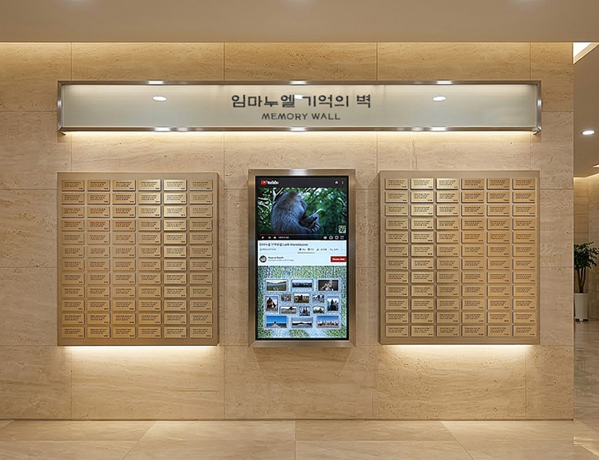

하나님이 주신 생명
영원히 주님과 함께 합니다
내 몸의 DNA는 주님께서 직접 만드신 섬세한 설계도입니다
인간이 만든 바코드가 아닌, 창조주께서 각 사람의 정체성을 담아 써 내려가신 생명의 설계도를 보존합니다. G-Code는 우리 몸속에 새겨진 하나님의 소유권 증명서이며, 이를 교회에 보관함으로써 신앙의 유산을 완성합니다.
수십 년 사역의 헌신이
교회와 가문의 이름으로 영원히 함께합니다.
임마누엘 생명 유산 사역
우리 교회에서 성도님의 영원한 믿음을 기억합니다.
인간이 만든 바코드가 아닌, 창조주께서 각 사람의 정체성을 담아 써 내려가신 생명의 설계도를 보존합니다. G-Code는 우리 몸속에 새겨진 하나님의 소유권 증명서이며, 이를 교회에 보관함으로써 신앙의 유산을 완성합니다.
하나님의 창조 설계도!
DNA 안에 새겨진 생명의 친필 서명
"주께서 내 내장을 지으시며 나의 모태에서 나를 만드셨나이다" (시 139:13)
인간이 만든 바코드가 아닌, 창조주께서 각 사람의 정체성을 담아 써 내려가신 생명의 친필 서명을 보존합니다.
"내 형질이 갖춰지기 전부터 주의 눈이 보셨으며..." (시 139:16)
히브리어 '골렘(Golem)'은 아직 완성되지 않은 태아의 형질입니다. 하나님은 우리가 DNA 형태일 때부터 이미 우리를 아시고 계획하셨습니다.
"너는 나를 도장 같이 마음에 품고..." (아 8:6)
G-Code는 우리 몸속에 새겨진 하나님의 소유권 증명서이며, 교회에 보관함으로 신앙 고백이 완성됩니다.
"육체의 생명은 피에 있음이라" (레 17:11)
피는 하나님이 부여하신 생명의 핵심입니다.
혈액이 모아진 사각형의 틀은 "반석"을 의미하며, 생명의 근원을 귀하게 여기는 행위입니다.
호흡과 성령의 숨결이 닿는 타액을 보존하는 것은, 하나님이 흙으로 사람을 빚으시고 그 코에 생기를 불어넣으신 그 형질을 존중하고 기리는 일입니다.
고난과 헌신의 삶을 견뎌낸 신체의 일부(케라틴)를 보존함으로써, 한 사람이 이 땅에서 하나님 앞에 살아낸 삶의 무게와 헌신을 영구히 기립니다.
"주님 전에서 영원히 함께합니다"
부모님의 DNA와 함께, 부모님의 삶의 역사가 담긴 사진, 영상 자료를 100년후의 후손들에게도 보여주며 가족의 뿌리를 남기는 물리적·영적 거점이 마련됩니다.
거액의 장지 부담을 덜면서도 생존부터 사후까지 가장 품격 있는 방식으로 부모님을 예우합니다.
우리 가문의 믿음이 어떻게 시작되었는지 후손들에게 시각적으로 전달하며 신앙의 정체성을 세워줍니다.
혈액이나 타액 한 방울이면 됩니다. 세계적인 DNA보존 기술을 적용하였으며, DNA 파괴 효소를 잠재우고, 상온에서도 수십 년간 생생한 유지가 가능합니다.
DNA의 천적인 빛과 자외선을 완벽히 차단하는 특수하게 만들어진 황동 캡슐을 사용합니다. 영구적인 보존을 위한 최적의 물리적 보호 환경을 제공합니다.

기억의 벽 보존함 명패의 QR코드를 통해 성도님의 삶의 궤적, 사진, 영상 등의 디지털 기록을, 수백년의 후손들도 우리 교회에서 언제든 열람할 수 있습니다.

교회의 유휴 공간을 품격 있는 '명예의 전당'으로 조성합니다.
교회의 규모와 요구에 따라 맞춤형 설계로 제작되며, 성도의 고착화와 교회 역사 아카이브 구축을 동시에 실현합니다.
설치 사양: 12행 x 6열(144칸) / 12행 x 10열(240칸)
설치 높이: 85cm ~ 2m (최적의 시야 확보)

교회 또는 기도원 등의 일정 공간을 활용하여 성도님들의 기억의 공간으로 고급스럽게 인테리어 한 명예의 전당 조성

교회 또는 기도원 등의 유휴 공간의 벽면을 활용하여 접근성을 높인, 기억의 벽(Memory Wall)

성도님들의 DNA와 삶의 모든 기록이 담겨져 있는 디지털 자료가 들어 있는 기억의 도서관입니다.
'기억의 벽'에서는 성도님의 삶의 궤적을 보여주는 사진, 영상, 약력 및, AI를 활용한 선진적 시스템으로 영구 보존 됩니다.
DNA 보존 기반의 메모리얼 시스템으로 특허 출원된 '스마트 메모리얼 시스템은,
나의 핸드폰으로 QR을 찍으면, 누구나 손쉽게 대형 모니터를 컨트롤할 수 있습니다.
성도님들의 후손들은 수백 년이 흐른 후에도, 성도님이 평생을 다니시던 바로 우리 교회에서
성도님 가문의 신앙적 역사와 아카이브를 생생하게 경험하게 됩니다.
1. 모니터에 있는 QR을 촬영합니다
2. 로그인을 합니다 (개인정보/성명·생일)
3. 나의 핸드폰이 리모콘이 되어
모니터를 컨트롤 합니다
4. 사진과 영상 및 AI를 불러냅니다
5. 성도님의 대표 사진을 띄웁니다
6. 성도님의 약력을 띄웁니다